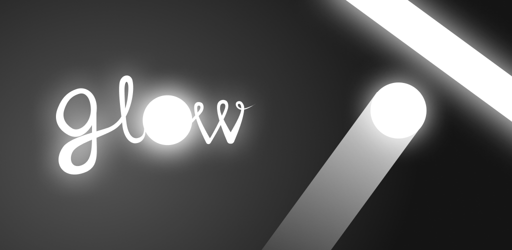

Glow


Игра Glow бросает вам черно-белый вызов! Напрягите внимание и меняйте цвет ламп, чтобы шар не врезался в препятствие другого цвета. Тренируйте скорость реакции: включайте и выключайте свет вовремя. Черно-белая игра со светящимся неоновым шариком ждет вас.
Светящийся шарик двигается между двух ламп, отскакивая от них. Это своеобразный пинг понг или неоновый хоккей. Суть этой игры в том, чтобы неоновый шарик касался только препятствий такого же цвета. Вам нужно вовремя включать и выключать лампы, меняя их цвет с черного на белый и наоборот, чтобы мяч и препятствие, к которому он летит, совпадали по цвету. Если шар черный шар врежется в белую лампу - игра закончится.
Играйте как можно дольше и установите свой рекорд!
Преимущества:
- Легко играть, простое управление.
- Эффект свечения
-Неоновый эффект
-минималистичный черно-белый дизайн со светодиодом.
-крутые звуковые эффекты.
-вы соревнуетесь с самим собой: следите за шаром и устанавливайте свой рекорд.
-увлекательный игровой процесс: вам захочется играть с glow снова и снова.
-нет ограничений по времени: играйте в любое время в любом месте.
Как играть:
-следите за цветом шарика и лампы, к которой он летит: если они не совпадают, кликните по экрану и переключите свет..
-В процессе игры скорость движения мяча увеличивается. Будьте внимательны и реагируйте вовремя до того, как мяч врежется в лампу, иначе он разобьется.
Отличная тренировка навыков
Игра Glow тренирует мозг и улучшает навыки: концентрацию, ловкость,стрессоустойчивость, реакцию, координацию.
GLOW подойдет тем, кто:
-любит черно-белые игры,
-хочет потренировать скорость реакции,
-ценит стильные минималистичные игры
-играл в color switch и ищет похожее, но другое.
Наслаждайтесь захватывающей игрой neon ball hockey и тренируйте реакцию!
Загрузите игру и не забудьте ее оценить.
Мы постоянно совершенствуем игру. Оставляйте отзывы - так вы поможете нам ее улучшить!